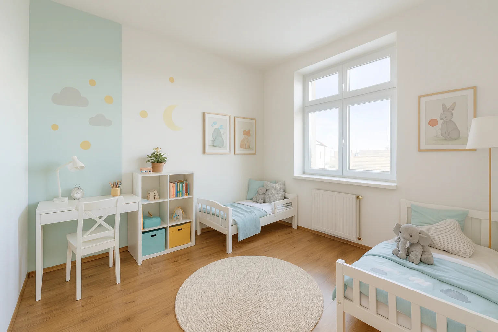
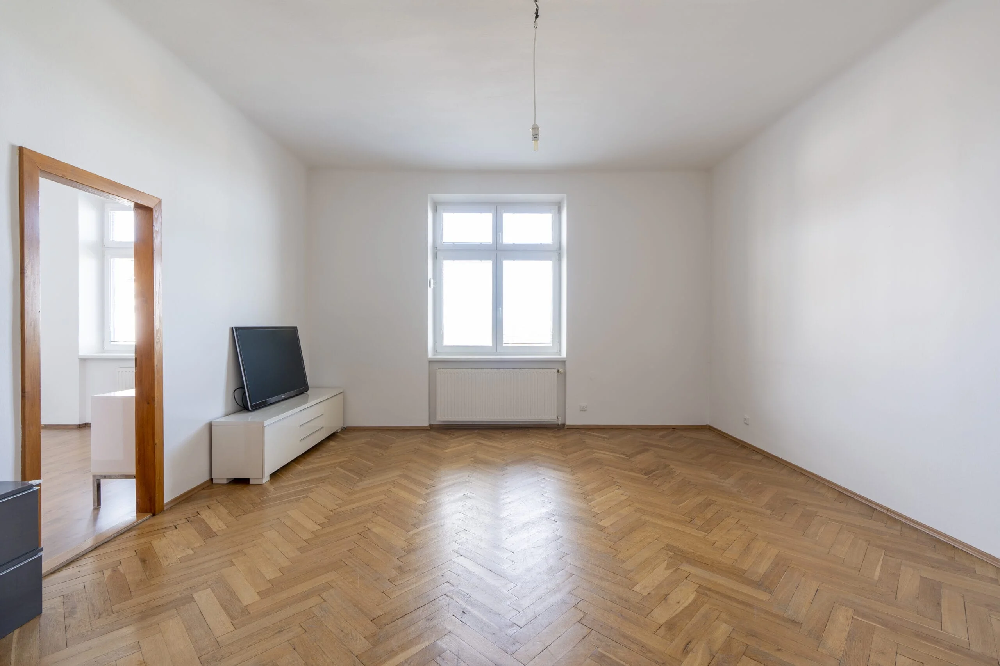
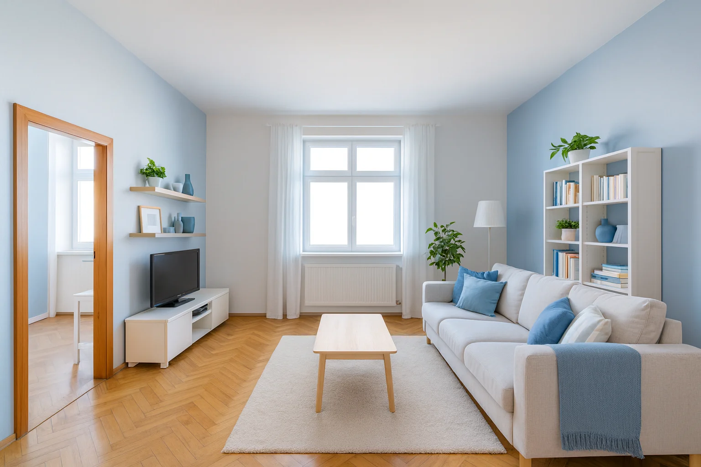
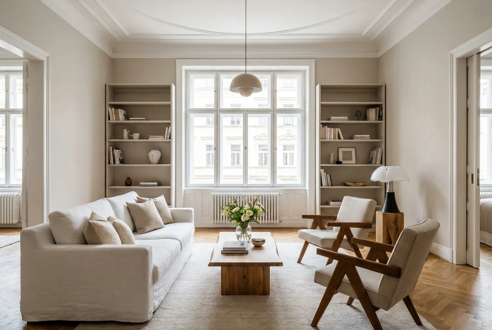

Možná jste pojem homestaging zaslechli, ale nejste si jistí, co přesně znamená a jestli se vyplatí. Ve zkratce: je to příprava nemovitosti tak, aby na fotkách i při prohlídce zapůsobila na co nejvíc kupujících — a tím se prodala rychleji a za lepší cenu. V tomto článku si vysvětlíme, jak funguje, kolik stojí a komu dává smysl.
Co je homestaging
Homestaging je „aranžování" nemovitosti na prodej. Nejde o rekonstrukci ani o drahé předělávky, ale o cílenou úpravu vzhledu: odosobnění prostoru, doplnění vhodného nábytku a dekorací, sladění barev, optimální rozmístění a vytvoření atmosféry, do které se kupující snadno vžije. Cílem je, aby si při prohlídce řekl „tady bych chtěl bydlet", ne „tohle budu muset celé předělat".
Důležitý rozdíl oproti běžnému zařízení: homestaging necílí na váš vkus, ale na vkus co nejširšího okruhu kupujících. Proto sází na neutrální, světlé a čisté provedení, které nikoho neodradí a každému dovolí představit si vlastní bydlení.

Proč funguje
Kupující se rozhodují emocemi a ty pak obhajují rozumem. Prázdný byt působí studeně a je těžké odhadnout velikost místností. Přeplněný nebo zastarale zařízený byt zase působí menší a vyžaduje od kupujícího představivost, kterou většina lidí nemá. Hezky připravený prostor vypadá větší, světlejší a hodnotnější — a kupující jsou za něj ochotni nabídnout víc.
K tomu se přidává rychlost. Připravená nemovitost se zpravidla prodává výrazně rychleji, což šetří peníze i nervy — každý měsíc navíc znamená další splátky hypotéky, energie a nejistotu. Kratší doba prodeje navíc znamená, že nemovitost na trhu „neokorá" a nemusíte slevovat.
Fyzický vs. virtuální homestaging
Při fyzickém homestagingu se do prostoru reálně doveze nábytek, textilie a dekorace. Je nejpůsobivější při fyzických prohlídkách, protože kupující prostor zažije na vlastní kůži. Nevýhodou jsou vyšší náklady a logistika — pronájem nábytku, doprava, instalace a následný odvoz.
Při virtuálním homestagingu se zařízení doplní digitálně přímo do fotek. Prázdný byt tak na inzerátu vypadá zařízeně a útulně, bez jakéhokoli stěhování. Virtuální varianta je výrazně levnější, rychlá a dnes velmi populární právě proto, že drtivá většina kupujících si nemovitost nejdřív prohlíží online. Kombinace kvalitních fotek a virtuálního homestagingu bývá nejúčinnější poměr ceny a efektu.

Před
PoPro koho se hodí
Homestaging dává největší smysl u prázdných bytů, u zastarale nebo příliš osobitě zařízených nemovitostí a u prostorů, které se na fotkách „nedají dobře přečíst" — malé byty, atypické dispozice, tmavší místnosti. I drobná úprava často znamená rozdíl mezi inzerátem, který lidé přeskočí, a tím, na který kliknou.
Naopak u novostaveb v perfektním stavu nebo už hezky zařízených bytů může stačit jen profesionální focení. Vždy jde o poměr nákladu na homestaging a očekávaného přínosu na ceně a rychlosti prodeje.

Závěr
Homestaging není zbytečný luxus, ale nástroj, který se obvykle vrátí na vyšší prodejní ceně a kratší době prodeje. Zvlášť virtuální varianta je dnes dostupná pro skoro každou nemovitost a její poměr ceny a efektu je těžko překonatelný.
My v Bezmakléřích nabízíme virtuální homestaging jako součást prezentace nemovitosti. Jak celou prezentaci připravit a co všechno obnáší popisujeme v kompletním návodu na prodej bez realitky. Jak pořídit co nejlepší fotografie pak najdete v článku o focení nemovitostí.
Často kladené otázky
Virtuální homestaging jako součást komplexní prezentace
V Bezmakléřích zajistíme profesionální focení, virtuální homestaging i kompletní prezentaci vaší nemovitosti — za jednorázový poplatek místo statisícové provize. Napište si o nezávaznou nabídku.
Napište si o nezávaznou nabídku